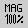

Simply click on one of the available animations and Animal, the Animation Tool for Algorithms will be loaded. After that, the Animation-Window appears immediately.
The Animation-Window contains the following options:
 Set display speed
Set display speed
 Set scale
 Start animation in first step
Start animation in first step
 Go back to previous animation step
Go back to previous animation step
 Display the animation in reserve slide-show mode
Display the animation in reserve slide-show mode
 Play the animation in reserve mode
Play the animation in reserve mode
 Pause the current animation
Pause the current animation
 Play the animation
Play the animation
 Display the animation in slide-show mode
Display the animation in slide-show mode
 Go forward to next animation step
Go forward to next animation step
 Go to end of animation
Go to end of animation
 Click both the Close-Button of the Animation-Window and the Program-Window to
close the animation properly
Click both the Close-Button of the Animation-Window and the Program-Window to
close the animation properly